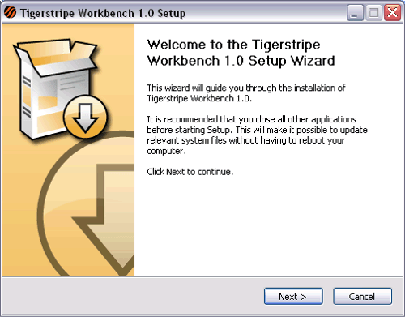
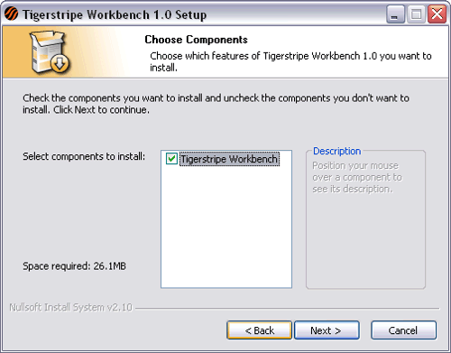
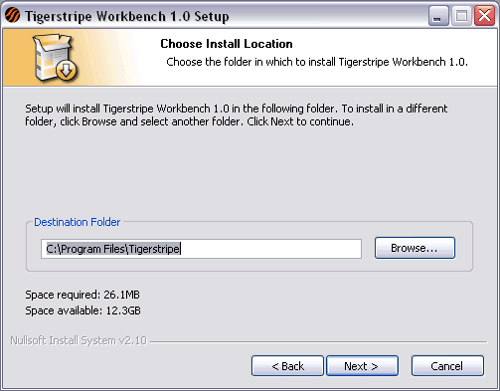
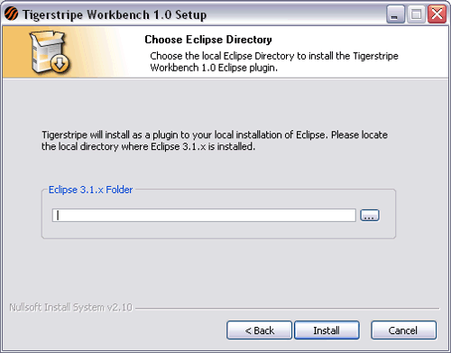

© copyright 2005, 2006, 2007 Cisco Systems, Inc. - All rights reserved
This section provides insight on the installation and un-installation procedures for Tigerstripe Workbench 1.0:
Tigerstripe Workbench 1.0 is the first official release of the Service Contract design environment. However, many users have been trying this environment since September'05 through the Tigerstripe Beta Program. If you have a Beta Version of Tigerstripe Workbench installed (ie. version prior to 1.0) you need to un-install it explicitly.
To do so, from the Windows Start menu, please select Tigerstripe->uninstall. This will launch the Tigerstripe Uninstaller. Please press Next to complete the un-install of Tigerstripe Workbench.
Tigerstripe Workbench is shipped as a Windows executable (.exe file) that triggers an Install Wizard. Prior to running this wizard, you need to install a compatible version of Eclipse IDE. For more information on the supported version, please refer to the section below. Make sure you write down the installation directory of the Eclipse IDE on your local hard drive as the Tigerstripe Installer needs this information.
Make sure Eclipse is not running, and double-click on the Tigerstripe executable to start the wizard. The following wizard opens:

Simply click Next to continue. On the next page, you need to accept the terms and condition of the License, by clicking I Agree.

The page presents you with optional components to be installed. Tigerstripe Workbench is enabled by default. Simply Click Next.

On the following page, you can select the Installation Directory for Tigerstripe. By default, it will be installed in C:\Program Files\Tigerstripe\. When you are satisfied with the location of the installation directory, click Next.

On this final page, you need to locate your local installation of Tigerstripe on your local hard drive. Please fill-in the root directory of your eclipse installation (ie. the directory that contains the eclipse.exe executable). Then press Install to complete the installation.
These are the requirements to run Tigerstripe Workbench 2.2.x:

© copyright 2005, 2006, 2007 Cisco Systems, Inc. - All rights reserved